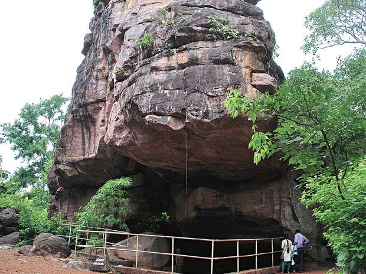

 A UNESCO World Heritage Site, ‘Bhimbetka Caves’ is one of the ‘must-visit’ sightseeing places in Bhopal. Stocked with pre-historic rock paintings dating back to the periods between Palaeolithic and Medieval ages, these caves are no less than a splendid art-gallery providing a deep insight into development of human race with time. BHOPAL
Located on the bank of ‘Upper Lake’, ‘Gohar Mahal’ is yet another of the best places to see in Bhopal. Standing tall as a testimony to the cultural legacy of this city of Nawabs, it is actually a beautiful mansion built in the form of a palace, representing an excellent blend of Mughal and Hindu styles of architecture.
Located on the shores of pristine ‘Motia Talaab’ in Bhopal, the ‘Taj-ul-Masajid’ is one of the biggest attractions in the city and needless to say, a significant site of religious tourism for Muslims who travel here from far off corners of the country and the world.